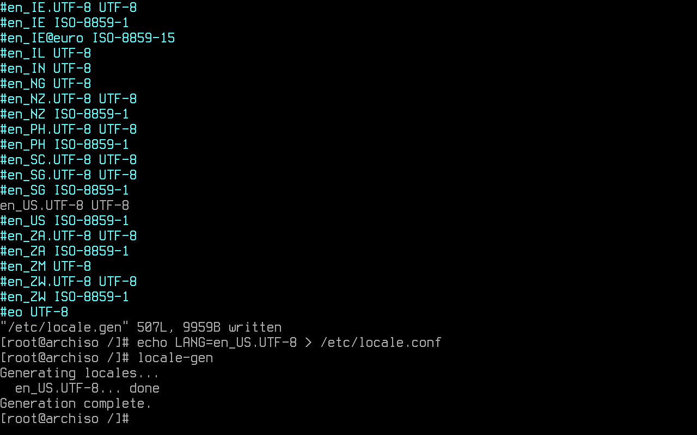
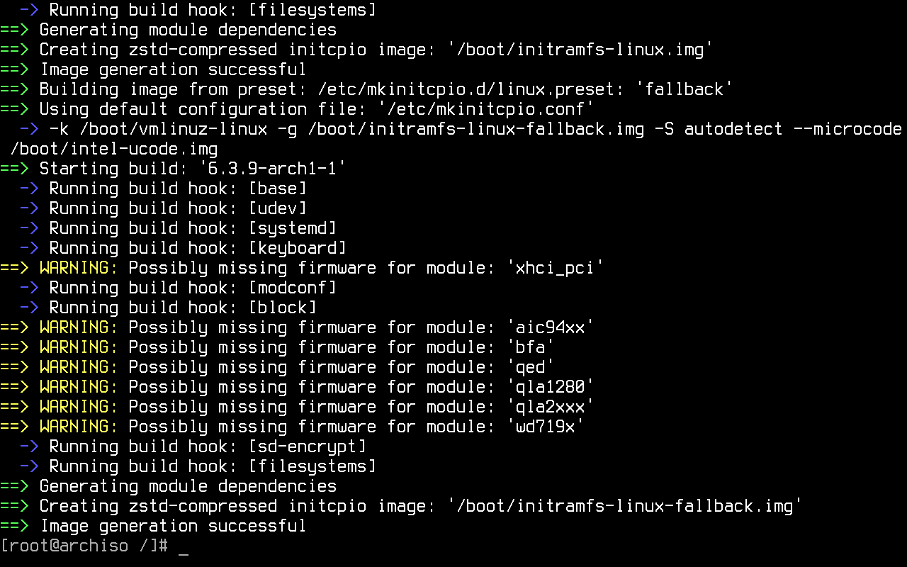

Barebones
Installation
Mirrors selection
Packages are downloaded from mirror servers. Reflector updates the mirror list by 20 most recently synchronized HTTPS mirrors and sorting them by download rate after connecting to the internet on the live system.
The higher a mirror is placed in the list, the more priority it is given when downloading a package. Usually, the one generated on the live system is fine. If not, it may be edited.
Essential packages installation
Pacstrap is designed to create a new system installation from scratch. It is used to install specified packages into a given directory after setting up the mountpoints defined before (specifically into the root partition).
Optional: base-devel , vim, intel-ucode, amd-ucode
pacstrap /mnt base base-devel linux linux-firmware btrfs-progs vim intel-ucode
System configuration
Fstab
The fstab file can be used to define how disk partitions, various other block devices, or remote file systems should be mounted into the file system. An fstab file is generated with:
genfstab -U /mnt >> /mnt/etc/fstab

Chroot
A chroot is an operation that changes the apparent root directory for the current running process and their children. The following command changes root into the new system:
arch-chroot /mnt/
TIme-zone
By running the following command, an /etc/localtime symlink that points to a zoneinfo is created. If the user's
time zone name is unknown, it is recommended to play around by looking at the zoneinfo directory content (e.g.
ls /usr/share/zoneinfo/) to see which option is best suited. Replacing Region and City is necessary:
ln -sf /usr/share/zoneinfo/Region/City /etc/localtime
Hwclock is an administration tool for the time clocks. The following command sets the Hardware Clock from the System Clock and updates the timestamps found in /etc/adjtime:
hwclock --systohc
Localization
To make use of the english language in the system, en_US.UTF-8 UTF-8 found in /etc/locale.gen must be uncommented.
vim /etc/locale.gen
By using echo, it is possible to edit/create a file without having to use a text editor. This command creates a locale.conf file and sets the LANG variable to the same uncommented above:
echo LANG=en_US.UTF-8 > /etc/locale.conf
The locales are generated by running:
locale-gen

(Optional) Persistent keyboard layour
echo KEYMAP=la-latin1 > /etc/vconsole.conf
Network configuration
echo myhost > /etc/hostname
vim /etc/hosts

Initramfs
vim /etc/mkinitcpio.conf
-
base: this hook provides crucial runtime necessities for booting.
-
udev: adds the udev daemon to the initramfs, allowing for dynamic loading of modules and reliable detection of the root device via tags (UUID).
-
systemd: this install a basic systemd setup in your initramfs, and is meant to replace the 'base', 'usr', 'udev' and 'resume' hooks. Other hooks with runtime components will need to be ported, and will not work as intended. You also may wish to still include the 'base' hook (before this hook) to ensure that a rescue shell exists on your initramfs.
-
autodetect: This hook shrinks your initramfs to a smaller size by autodetecting the needed modules.
-
keyboard: This hook loads the necessary modules for keyboard devices. modconf: This hook installs modprobe configuration files from /etc/modprobe.d and /usr/lib/modprobe.d.
-
block: This hook loads the necessary modules for most block devices using pata, sata, scsi, firewire, usb, or mmc.
-
sd-encrypt: This hook allows for an encrypted root device with systemd initramfs. filesystems: This hook adds filesystems modules to the image.
mkinitcpio -P

Password creation
passwd
User creation
useradd -mG wheel username
EDITOR=vim visudo
%wheel ALL=(ALL) ALL
passwd username

pacman -S linux-headers networkmanager dialog wpa_supplicant mtools dosfstools git xdg-utils xdg-user-dirs
systemctl enable NetworkManager
Bootloader
Systemd-boot as bootloader
bootctl --path=/boot install
echo blkid -s UUID -o value /dev/sda2 >> /boot/loader/entries/arch.conf
vim boot/loader/entries/arch.conf
vim /boot/loader/loader.conf
exit
umount -a
Reboot
reboot